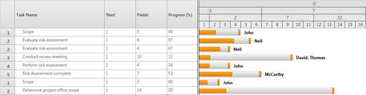
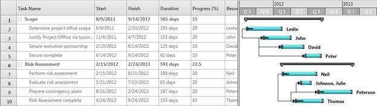

Essential Gantt provides the custom schedule support that allows you to define your own schedule for Gantt to track the progress of projects. You can define the schedule for any measurement unit or for different types of date time formats namely quarterly basis scale and so on, with this feature.
This feature will get the information from the user and will draw the Gantt schedule with that information. Custom schedule has been split into two types namely:
· Custom Numeric
· Custom DateTime
These types are included in the existing SchduleType enum.
Custom Numeric
Custom Numeric schedule is to define your own schedule with any numeric measurement unit other than date time. With this schedule, you can track the progress based on your own measurement and there is no need to depend on Date Time. Two new API’s are added to the Mapping attributes to support this schedule in GanttChart and GanttGrid.
Custom DateTime
Custom DateTime schedule is to define your own date time schedule, which can match your current financial calendar. Suppose you need the schedule on quarterly basis, you can use this schedule type to define the custom schedule.
In both the custom schedules, Gantt will get the information from the application to render the schedule. Gantt will accept the custom schedule information in the form of a collection of “GanttScheduleRowInfo” object, and process it to draw the schedule.
GanttScheduleRowInfo class will have following fields:
PixelsPerUnit—Gets the information about the pixel value equivalent to one unit in custom measurement.
CellsPerUnit—Gets the information about a cell size of preceding row in the schedule based on the immediate next row. In CustomDateTime Schedule, the CellsPerUnit will be used to customize the cell. For example, in quarterly basis month cell, we need to draw a cell by consolidating three months. For this, we need to define the CellsPerUnit of that corresponding row as 3.
TimeUnit—Gets the information about the type of row, when the schedule type is CustomDateTime. The Time unit can be any one of the following:
· Minutes—represents the corresponding row as minute’s row.
· Hours—represents the corresponding row as hour’s row.
· Days—represents the corresponding row as day’s row
· Weeks—represents the corresponding row as week’s row
· Months—represents the corresponding row as month’s row
· Years—represents the corresponding row as year’s row
Use Case Scenario
This will be useful when users like to define their own schedules with their own measurements/calendars.
Example 1: The Research organizations may follow different measurements to track their work progress and the measurement will depend on their products. In this case, they can use CustomNumeric schedule to define the schedule with their own measure.
Example 2: A very big construction project many have the time period of many years or months. They need some customized way of date time schedule to track their progress. In this scenario, they can use the CustomDateTime schedule to form the custom schedule like the schedule that has the time scale on quarterly basis to track their progress.
Properties
|
Property |
Description |
Type |
Data Type |
|
CustomScheduleSource |
Gets/Sets the custom schedule items Source of the Gantt. |
DependencyProperty |
IList<GanttScheduleRowInfo> |
Events
|
Event |
Description |
Arguments |
Type |
|
ScheduleCellCreated |
Whenever a schedule cell is created, this event will be triggered. The handler of the event will have the newly created cell (GanttScheduleCell) in the argument. By handling this event, the user can customize the appearance of the cell. |
ScheduleCellCreated (object sender, ScheduleCellCreatedEventArgs args) |
Routed Event |
GanttScheduleCell Class
The properties of the GanttScheduleCell class are as follows:
|
Property |
Description |
Type |
Data Type |
|
CellDate |
Gets/Sets the current schedule cell date in the datetime schedule. |
Dependency Property |
DateTime |
|
CellToolTip |
Gets/Sets the current schedule cell tool tip. |
Dependency Property |
Object |
|
CellTimeUnit |
Gets/Sets the current schedule row time unit (like weeks, months and so on). |
Dependency Property |
TimeUnit (Enum) |
|
Content |
Gets/Sets the current schedule cell content |
Dependency Property |
Object |
Adding Custom Schedule to an Application
To Add CustomNumeric Schedule to an application:
1. Define the Mapping for StartPointMapping and FinishPointMapping in TaskAttributeMapping.
2. Set the Gantt Schedule type as CustomNumeric.
3. Bind the GanttScheduleRowInfo collection to the CustomScheduleSource property of the Gantt.
The following code illustrates this:
|
[XAML]
<sync:GanttControl Grid.Row="1" ScheduleType="CustomNumeric" x:Name="Gantt" VisualStyle="Office2010Black"> <sync:GanttControl.TaskAttributeMapping> <sync:TaskAttributeMapping TaskIdMapping="Id" TaskNameMapping="Name" StartPointMapping="Start" FinishPointMapping="End" ChildMapping="ChildTask" ProgressMapping="Complete" ResourceInfoMapping="Resource"> </sync:TaskAttributeMapping> </sync:GanttControl.TaskAttributeMapping>
|
|
[C#]
// Assigning the custom schedule Items Source this.Gantt.CustomScheduleSource = this.GetInfo();
/// Gets the Numeric Schedule Items Info private ObservableCollection<GanttScheduleRowInfo> GetInfo() { // Creating a new collection ObservableCollection<GanttScheduleRowInfo> RowInfo = new ObservableCollection<GanttScheduleRowInfo>();
// Defining the top most row of the schedule RowInfo.Add(new GanttScheduleRowInfo() { CellsPerUnit = 3 });
// Defining the consecutive rows of the schedule RowInfo.Add(new GanttScheduleRowInfo() { CellsPerUnit = 2 }); RowInfo.Add(new GanttScheduleRowInfo() { CellsPerUnit = 5 });
// Defining the bottom most row of the schedule // Here we are setting the cell width in pixels RowInfo.Add(new GanttScheduleRowInfo() { PixelsPerUnit = 30d });
return RowInfo; }
|

Figure 28
Samples Link
To view samples:
1. Select Start -> Programs -> Syncfusion -> Essential Studio x.x.xx -> Dashboard.
2. Click Run Samples for WPF under the User Interface Edition panel.
3. Select Gantt.
4. Expand the Custom Schedule item in the Sample Browser.
5. Choose the Custom Numeric Schedule sample to launch.
Adding CustomDateTime Schedule to an Application
To Add CustomDateTime Schedule to an application:
1. Define the Gantt Schedule type as CustomDateTime.
2. Bind the GanttScheduleRowInfo collection to the CustomScheduleSource property of the Gantt.
The following code illustrates this:
|
[XAML]
<sync:GanttControl Grid.Row="1" x:Name="Gantt" ScheduleType="CustomDateTime" VisualStyle="Office2010Black" ItemsSource="{Binding GanttItemSource}" ShowChartLines="False" ShowNonWorkingHoursBackground="False" ToolTipTemplate="{StaticResource toolTipTemplate}"> <sync:GanttControl.TaskAttributeMapping> <sync:TaskAttributeMapping TaskIdMapping="Id" TaskNameMapping="Name" StartDateMapping="StDate" ChildMapping="ChildTask" FinishDateMapping="EndDate" DurationMapping="Duration" ProgressMapping="Complete" ResourceInfoMapping="Resource" PredecessorMapping="Predecessor" > </sync:TaskAttributeMapping> </sync:GanttControl.TaskAttributeMapping> </sync:GanttControl>
|
|
[C#]
// Assigning the custom schedule Items Source. this.Gantt.CustomScheduleSource = this.GetCustomScheduleSource();
// Hooks the Schedulecell created event to customize the schedule cell appearance. this.Gantt.ScheduleCellCreated+=new GanttControl.ScheduleCellCreatedEventHandler (Gantt_ScheduleCellCreated);
/// Gets the Custom Schedule Items Info public IList<GanttScheduleRowInfo> GetCustomScheduleSource() { List<GanttScheduleRowInfo> RowInfo = new List<GanttScheduleRowInfo>();
// Defining the top most row of the schedule // Here we need the Year Schedule in this row. So we are defining the TimeUnit as years RowInfo.Add(new GanttScheduleRowInfo() { TimeUnit = TimeUnit.Years, CellsPerUnit = 1, HorizontalAlignment = HorizontalAlignment.Left });
// Defining the bottom most row of the schedule // Here we need to display the three months in a cell so we are defining TimeUnit in months, and cells per Unit as 3 // Bottom Most row should consist information about the pixels per Unit, so we define the pixels per unit as 15 (here this is a one month width). RowInfo.Add(new GanttScheduleRowInfo() { TimeUnit = TimeUnit.Months, CellsPerUnit = 3, PixelsPerUnit = 15 });
return RowInfo; }
/// Handles the Schedule cell Created Event of the Gantt void Gantt_ScheduleCellCreated(object sender, ScheduleCellCreatedEventArgs args) { DateTime currentDate = args.CurrentCell.CellDate;
if (args.CurrentCell.CellTimeUnit == TimeUnit.Months) { args.CurrentCell.Foreground = new SolidColorBrush(Colors.White);
// Quarter 1 dates contain months below 3 as we are checking the cell date and changing the content of the cell. if (currentDate.Month <= 3) { args.CurrentCell.Content = "Q 1"; args.CurrentCell.CellToolTip = "Quarter 1"; args.CurrentCell.Background = new SolidColorBrush(Colors.DarkGray); }
// Quarter 2 dates contain months between 4 – 6 as we are checking the cell dates and changing the content of the cell. else if (currentDate.Month > 3 && currentDate.Month <= 6) { args.CurrentCell.Content = "Q 2"; args.CurrentCell.CellToolTip = "Quarter 2"; args.CurrentCell.Background =new SolidColorBrush(Colors.LightGray); }
// Quarter 3 dates contains months between 6 - 9 as we are checking the cell date and changing the Content of the cell. else if (currentDate.Month > 6 && currentDate.Month <= 9) { args.CurrentCell.Content = "Q 3"; args.CurrentCell.CellToolTip = "Quarter 3"; args.CurrentCell.Background = new SolidColorBrush(Colors.DarkGray); }
// Quarter 4 dates contains months between 9 - 12. So we are checking the cell date and changing the content of the cell. else if (currentDate.Month > 9 && currentDate.Month <= 12) { args.CurrentCell.Content = "Q 4"; args.CurrentCell.CellToolTip = "Quarter 4"; args.CurrentCell.Background =new SolidColorBrush(Colors.LightGray); } } }
|

Figure 29
Samples Link
To view samples:
1. Select Start -> Programs -> Syncfusion -> Essential Studio x.x.xx -> Dashboard.
2. Click Run Samples for WPF under User Interface Edition panel.
3. Select Gantt.
4. Expand the Custom Schedule item in the Sample Browser.
5. Choose the Customized Schedule Appearance sample to launch.
ScheduleCellCreatedEventArgs Class
The ScheduleCellCreatedEventArgs consists of the current schedule cell in the name of CurrentCell. It is the GanttScheduleCell type.